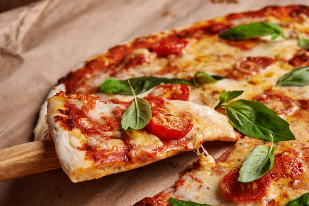

Home
Homemade Pizza

Make a homemade pizza & pizza dough recipe using simple pantry ingredients and a hot oven.
Ingredients
Pizza Dough
- Warm water: 1 ½ cups (355 ml), around 105°F–115°F
- Active dry yeast: 1 package (2 ¼ teaspoons)
- Bread flour or all-purpose flour: 3 ¾ cups (490 g)
- Extra virgin olive oil: 2 tablespoons
- Kosher salt: 2 teaspoons
- Sugar: 1 teaspoon
Sauce & Toppings
- Crushed tomatoes or pizza sauce: 1 cup
- Mozzarella cheese: 2 cups (shredded or sliced low-moisture/fresh)
- Parmesan cheese: Grated, for finishing
- Optional toppings: Pepperoni, fresh basil, or vegetables
Instructions:
- Proof the Yeast
- Combine the warm water, sugar, and yeast in a large bowl or stand mixer.
- Let it sit for 5 to 10 minutes until the top becomes foamy and active.
- Make and Knead the Dough
- Add the flour, olive oil, and salt to the yeast mixture.
- Mix on low speed or stir by hand until a shaggy dough forms.
- Knead for 7 to 10 minutes (using a dough hook or your hands) until the dough is smooth and slightly tacky.
- Let It Rise
- Lightly oil a large bowl, place the dough inside, and turn it to coat.
- Cover with plastic wrap or a damp cloth.
- Let it rise in a warm spot for about 1.5 hours (or store it in the fridge for 24 hours for deeper flavor) until doubled in size.
- Shape and Assemble
- Preheat your oven to 475°F–500°F (with a pizza stone or baking sheet inside if you have one).
- Punch down the risen dough and divide it into two equal balls for 12-inch pizzas.
- Stretch or roll the dough out on a lightly oiled or cornmeal-dusted surface.
- Spread an even layer of pizza sauce, followed by mozzarella cheese and your favorite toppings.
- Bake
- Bake for 12 to 15 minutes (or 7 to 8 minutes on a high-heat pizza stone/steel) until the crust is golden and the cheese is bubbling.
- Slice, garnish with parmesan or fresh basil, and serve hot.